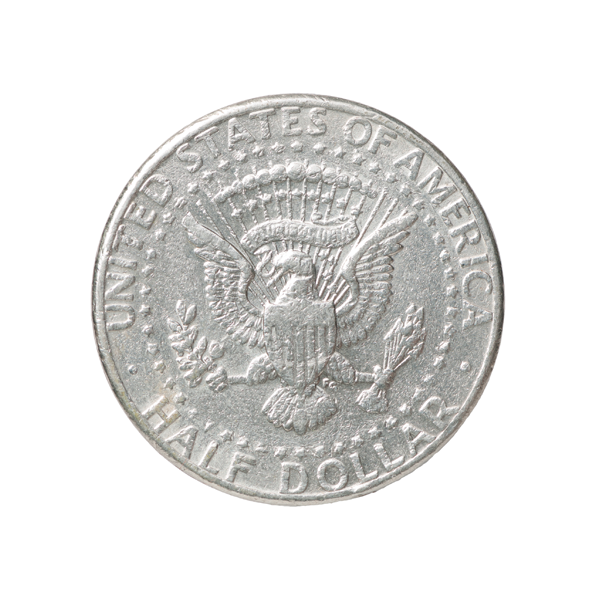

Джон Кеннеди
Артикул:
146885-972
В центре реверса находится рельефное изображение бутона крокуса исполненное методом тампопечати. Вверху надпись: CROCUS — латинское название вида цветка. В нижней части надпись — год чеканки 2013.
Крокус, или шафран, символизирует надежду и возрождение, ведь его цветение приходится на период, когда земля еще покрыта снегом.
Монета укомплектована подарочным демонстрационным футляром.
Цена:
2 430 ₽
| Год | 2013 |
| Номинал на монете, ед. нац. валюты | 10 Белорусских рублей |
| Страна-эмитент | Республика Беларусь |
| Качество чеканки | PR |
| Металл | Серебро |
| Масса хим. драгоценного металла в монете, гр | 14 г. |